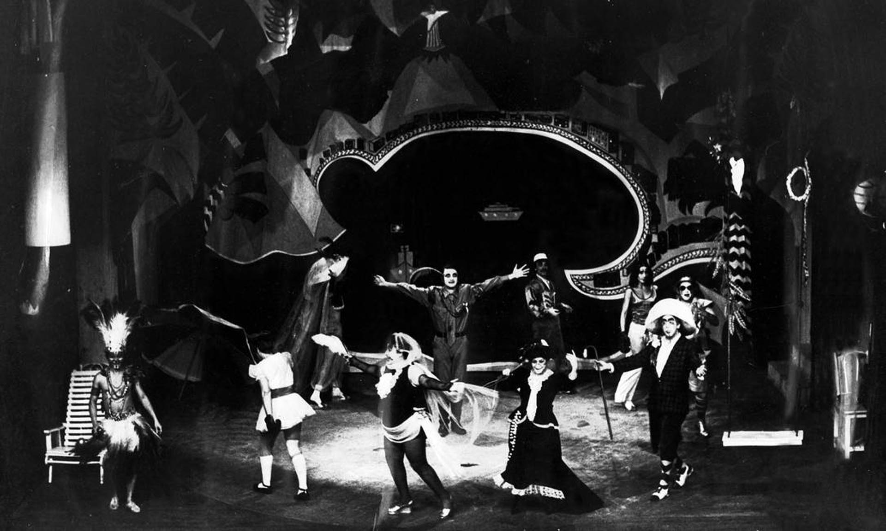
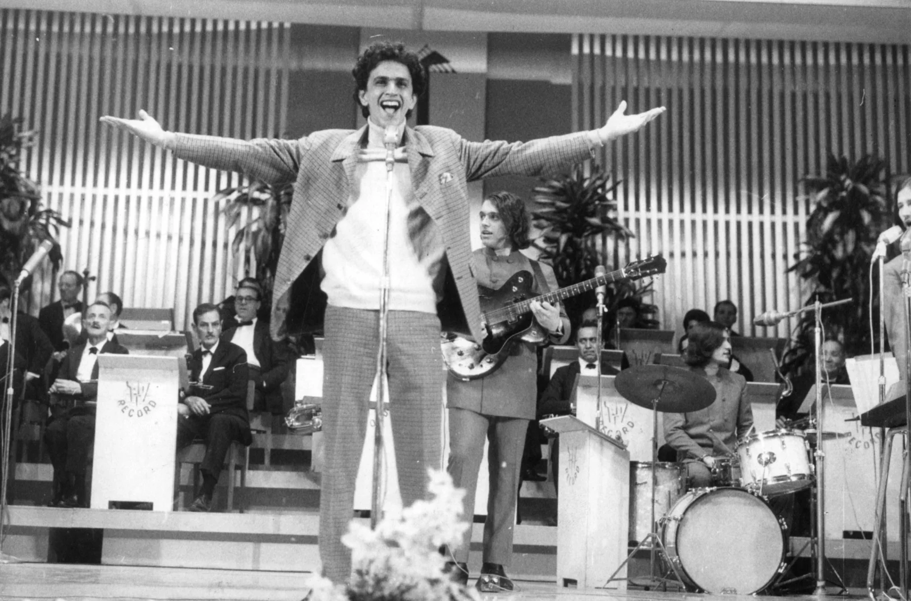
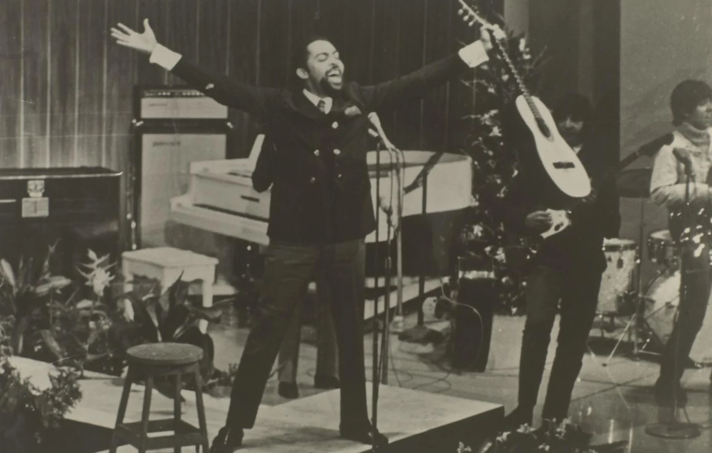
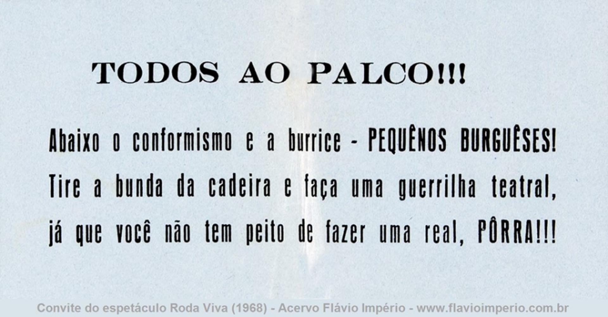

見るポイント
俳優が左右へ伸ばした腕を追うと、その向こうに、人の背丈をはるかに超える曲線が見えます。平らな背景の絵と、手前で動く人とが一続きの模様に見える舞台です。
作品・制作の例7件を紹介しています。図版で紹介する作品は4作品。実作品図版4点、AAGA模写（Runway制作）0点。
音楽・美術などにまたがる文化運動
Tropicalismo
砂を踏み、小さな建物の中へ入る。エリオ・オイチシカの《トロピカリア》は、眺めるだけでなく、歩いて経験する作品です。この題名は、音楽にも広がったトロピカリズモという文化運動と結びつきました。南国らしい模様の名前ではありません。
実作品を見る

画像を表示できませんでした。下の出典ページで確認できます。
オズワルド・ジ・アンドラージ（劇作）、ジョゼ・セルソ・マルチネス・コヘーア（演出）、エリオ・アイヒバウアー（舞台美術・衣装）、テアトロ・オフィシナ（上演） / 1967年9月初演
演劇の舞台美術・衣装（上演記録写真） ／ サンパウロ、テアトロ・オフィシナで初演。掲載写真は同劇団のアーカイブ。
俳優が左右へ伸ばした腕を追うと、その向こうに、人の背丈をはるかに超える曲線が見えます。平らな背景の絵と、手前で動く人とが一続きの模様に見える舞台です。
劇団の資料を保存するカンピーナス州立大学は、この上演を、劇団がトロピカリズモの先頭に立った転機として紹介しています。
撮影・図版制作 このコマの撮影者名は、掲載元の目録に記載なし。
図版所蔵 Arquivo Teatro Oficina（テアトロ・オフィシナ・アーカイブ）。図版提供 Memórias da Ditadura／ウラジミール・エルゾーギ研究所。掲載元に撮影者名の記載なし。
出典で作品・資料を見る ↗出典を示して再掲載可（Livre – Creditar a fonte）
劇団資料を公開した提供元は、この舞台写真を「出典を示して自由に利用可」と明記しています。
提供元の写真目録に従い、劇団アーカイブと公開元を表示しています。目録の表題と日付欄にずれがあるため、年は撮影年ではなく舞台の初演年を示しました。
提供元のJPEGをそのまま掲載しています。
出典先の原画像を開く ↗作品・図版の関連資料 ↗画像の利用条件 ↗実作品を見る

画像を表示できませんでした。下の出典ページで確認できます。
カエターノ・ヴェローゾ（作詞・作曲・歌）、ビート・ボーイズ（共演） / 1967年10月
テレビ音楽祭の舞台（当日の報道写真） ／ 1967年10月21日、サンパウロ。写真はブラジル国立公文書館所蔵、『コレイオ・ダ・マニャン』紙資料群、BR_RJANRIO_PH_0_FOT_47194_004。
ヴェローゾが広げた両腕の先まで目を動かすと、すぐ後ろのエレキギター、その奥の譜面台が同じ画面に収まります。テレビの観客には、歌手とバンド、楽団が一緒に映る舞台でした。
ジルベルト・ジル研究所は、この音楽祭でのヴェローゾとジルの上演を運動の始まりに位置づけています。この曲は4位に入りました。
撮影・図版制作 『コレイオ・ダ・マニャン』紙。撮影者個人の氏名は記録なし。
Public domain / Arquivo Nacional Collection（ブラジル国立公文書館）。『コレイオ・ダ・マニャン』紙、撮影者名不詳。国立公文書館とWikimediaの共同事業で公開。
出典で作品・資料を見る ↗提供元の表記はパブリックドメイン（Domínio público）
当日の舞台を写した報道写真を掲載しています。歌詞・楽譜・録音・テレビ映像は使用していません。
写真の提供元は、この図版を「Livre – Domínio Público」（自由利用・パブリックドメイン）に分類しています。
出典先の原画像を開く ↗作品・図版の関連資料 ↗画像の利用条件 ↗写真の縁まで収め、WebP形式で大小2枚に縮小しました。
実作品を見る

画像を表示できませんでした。下の出典ページで確認できます。
ジルベルト・ジル（作詞・作曲・歌）、オス・ムタンチス（共演） / 1967年10月
テレビ音楽祭の舞台（当日の報道写真） ／ サンパウロ、第3回ブラジル大衆音楽祭。写真はブラジル国立公文書館所蔵、『コレイオ・ダ・マニャン』紙資料群。
舞台の前に立つジルは、マイクから少し顔をそらし、腕を高く開いています。客席に向けた身ぶりと、右側に持ち上がったギターに注目すると、歌が舞台の動きにもなっている様子が分かります。
この上演は音楽祭の2位に入りました。トロピカリズモを率いたジルがオス・ムタンチスと共演し、テレビを通じてロックの楽器とブラジルの歌を同じ舞台に持ち込みました。
撮影・図版制作 『コレイオ・ダ・マニャン』紙。掲載元には撮影者個人の氏名の記載なし。
Domínio público / Acervo Arquivo Nacional（ブラジル国立公文書館）。『コレイオ・ダ・マニャン』紙、撮影者名不詳。図版提供 Memórias da Ditadura／ウラジミール・エルゾーギ研究所。
出典で作品・資料を見る ↗提供元の表記はパブリックドメイン（Domínio público）
当日の舞台を写した報道写真を掲載しています。歌詞・楽譜・録音・テレビ映像は使用していません。
写真の提供元は、この図版を「Livre – Domínio Público」（自由利用・パブリックドメイン）に分類しています。
出典先の原画像を開く ↗作品・図版の関連資料 ↗画像の利用条件 ↗写真の縁まで収め、WebP形式で大小2枚に縮小しました。
実作品を見る

画像を表示できませんでした。下の出典ページで確認できます。
『ホーダ・ヴィーヴァ』公演の制作陣（紙片の個人作者は不詳）。戯曲はシコ・ブアルキ、演出はジョゼ・セルソ・マルチネス・コヘーア。 / 1968年
演劇の観客に渡した印刷物 ／ フラヴィオ・インペリオ・アーカイブ所蔵。インペリオはこの公演で舞台美術と衣装を担当しました。
上の一行は「みんな舞台へ！」。三つの感嘆符が付いています。その下では、細長い文字がびっしり並びます。観客が手に取る紙の上でも、舞台から呼びかけるように文字の声量を変えています。
この紙片は、舞台と客席の境を越えようとした作品の一部です。ミナスジェライス連邦大学の博士論文は現物を図35に掲載し、観客に投げかけた言葉の働きを論じています。
撮影・図版制作 撮影・デジタル化の担当者名は提供元に記載なし。
図版所蔵 Acervo Flávio Império。図版提供 Memórias da Ditadura／ウラジミール・エルゾーギ研究所。撮影・デジタル化の担当者名は掲載元に記載なし。
出典で作品・資料を見る ↗出典を示して再掲載可（Livre – Creditar a fonte）
所蔵先を明記してこの紙片の図版を提供する資料ページに、出典を示して使用できる旨が記されています。
資料ページの「Livre – Creditar a fonte」に従い、所蔵・公開元を表示しています。図版下端にある元のクレジットも収録しています。
提供元のJPEGをそのまま掲載しています。
出典先の原画像を開く ↗作品・図版の関連資料 ↗画像の利用条件 ↗環境作品
砂や植物、小屋のような構造を通して、鑑賞者が歩きながら経験する環境をつくります。
作品・資料の出典を見る ↗作品名（出典表記）：トロピカリア（Tropicália：PN2・PN3）
エリオ・オイチシカ / 1967年 / 環境作品
この作品一つで、すべての活動を代表するわけではありません。
着用する布の作品
人がまとう布に、文字と身体の動きが加わります。作品を固定された形として見る習慣を変える例です。
作品・資料の出典を見る ↗作品名（出典表記）：私は反抗を体現する（P15 Parangolé, Eu Incorporo a Revolta）
エリオ・オイチシカ / 1967年 / 着用する布の作品
公式ページ内でケープ番号の表記に差があるため、P15と題名で同定します。
環境作品
人が歩き、留まり、感覚を使う場所をつくりました。作品に参加する方法が、より大きな空間へ広がった例です。
作品・資料の出典を見る ↗作品名（出典表記）：エデン（Éden）
エリオ・オイチシカ / 1967年構想／1969年発表 / 環境作品
構想年とロンドンでの発表年を分けます。
演劇の舞台美術・衣装（上演記録写真）
俳優が左右へ伸ばした腕を追うと、その向こうに、人の背丈をはるかに超える曲線が見えます。平らな背景の絵と、手前で動く人とが一続きの模様に見える舞台です。
作品・資料の出典を見る ↗原題：O Rei da Vela — montagem do Teatro Oficina
オズワルド・ジ・アンドラージ（劇作）、ジョゼ・セルソ・マルチネス・コヘーア（演出）、エリオ・アイヒバウアー（舞台美術・衣装）、テアトロ・オフィシナ（上演） / 1967年9月初演 / 演劇の舞台美術・衣装（上演記録写真）
テレビ音楽祭の舞台（当日の報道写真）
ヴェローゾが広げた両腕の先まで目を動かすと、すぐ後ろのエレキギター、その奥の譜面台が同じ画面に収まります。テレビの観客には、歌手とバンド、楽団が一緒に映る舞台でした。
作品・資料の出典を見る ↗原題：Alegria, Alegria — III Festival da Música Popular Brasileira
カエターノ・ヴェローゾ（作詞・作曲・歌）、ビート・ボーイズ（共演） / 1967年10月 / テレビ音楽祭の舞台（当日の報道写真）
テレビ音楽祭の舞台（当日の報道写真）
舞台の前に立つジルは、マイクから少し顔をそらし、腕を高く開いています。客席に向けた身ぶりと、右側に持ち上がったギターに注目すると、歌が舞台の動きにもなっている様子が分かります。
作品・資料の出典を見る ↗原題：Domingo no Parque — III Festival da Música Popular Brasileira
ジルベルト・ジル（作詞・作曲・歌）、オス・ムタンチス（共演） / 1967年10月 / テレビ音楽祭の舞台（当日の報道写真）
演劇の観客に渡した印刷物
上の一行は「みんな舞台へ！」。三つの感嘆符が付いています。その下では、細長い文字がびっしり並びます。観客が手に取る紙の上でも、舞台から呼びかけるように文字の声量を変えています。
作品・資料の出典を見る ↗原題：Todos ao palco!!! — filipeta do espetáculo Roda Viva
『ホーダ・ヴィーヴァ』公演の制作陣（紙片の個人作者は不詳）。戯曲はシコ・ブアルキ、演出はジョゼ・セルソ・マルチネス・コヘーア。 / 1968年 / 演劇の観客に渡した印刷物
軍事政権下のブラジルで、地域の文化と海外の新しい表現、大衆文化が交わりました。オイチシカは「熱帯の楽園」という分かりやすいイメージを、そのまま楽しませようとしたのではありません。見る人が体を動かし、いつもの見方を揺さぶることを大切にしました。
鮮やかな色も使われますが、色が派手なだけでこの運動の作品にはなりません。色と、身体の動きの関係を見ます。
音楽、文章、題名も重要です。「熱帯らしい書体」という一つの形にはまとめられません。
《パランゴレ》では、布は壁に掛ける絵ではなく、人がまとうものになります。動くと形も変わります。
《トロピカリア》や《エデン》は、歩く順番や滞在する時間によって経験が変わります。写真一枚で全体を知ったとは言えません。
ブラジルのモダニズムが1920年代から探った、海外の文化を受け取り自分たちの表現へ変える考え方と比較できます。ただし、時代も政治状況も違います。
作品を見る人も、作品の一部になれるのでしょうか。自分が動くことで変わる見え方を考える入口になります。
オイチシカの三つの美術作品のほかに、劇場の舞台美術、テレビ音楽祭での二つの実演、観客を舞台に招いた紙片を取り上げます。写真には、演奏者の身ぶりや、客席から見えた舞台の配置も残っています。
作品・制作の例7件を紹介しています。図版で紹介する作品は4作品。実作品図版4点、AAGA模写（Runway制作）0点。